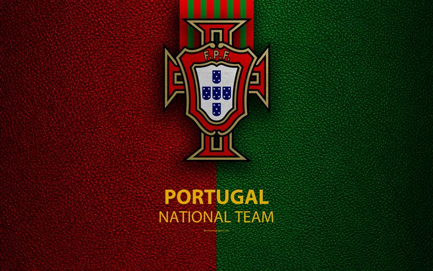

La nazionale di calcio del Portogallo (in portoghese Seleção Portuguesa de Futebol) è la rappresentativa calcistica del Portogallo ed è gestita dalla Federação Portuguesa de Futebol. Nella sua bacheca figurano un campionato europeo (2016) e due UEFA Nations League (2018-2019, 2024-2025). Esordì nella fase finale del campionato del mondo nell'edizione del 1966, conclusa al terzo posto, che è a tutt'oggi il miglior piazzamento della nazionale nella competizione; tornò in semifinale quarant'anni dopo, a Germania 2006, edizione in cui si classificò quarta. Al campionato d'Europa, su nove partecipazioni, per otto volte è arrivata almeno ai quarti di finale, e per cinque volte è arrivata nei primi quattro posti (nel 1984, 2000, 2004, 2012 e 2016, edizione in cui ha vinto la competizione). Conta inoltre una partecipazione alla Confederations Cup, a Russia 2017, torneo concluso al terzo posto. Nella graduatoria FIFA, in vigore da agosto 1993, la migliore posizione che ha occupato il Portogallo è il 3º posto, raggiunto per la prima volta nel maggio 2010, mentre il peggior posizionamento è il 43º posto, occupato nell'agosto 1998. Al 7 ottobre 2026 occupa la 5ª posizione nel Ranking FIFA.[1]
Clicca il logo per tornare indietro